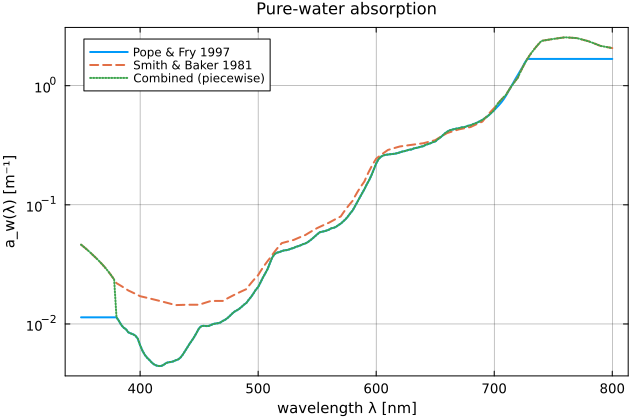
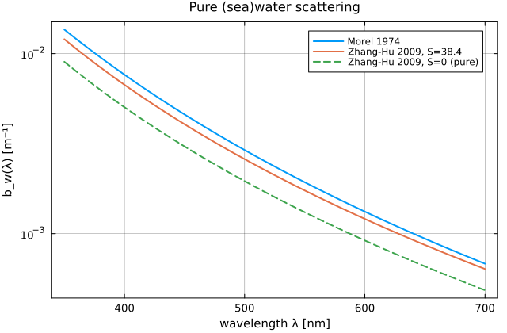
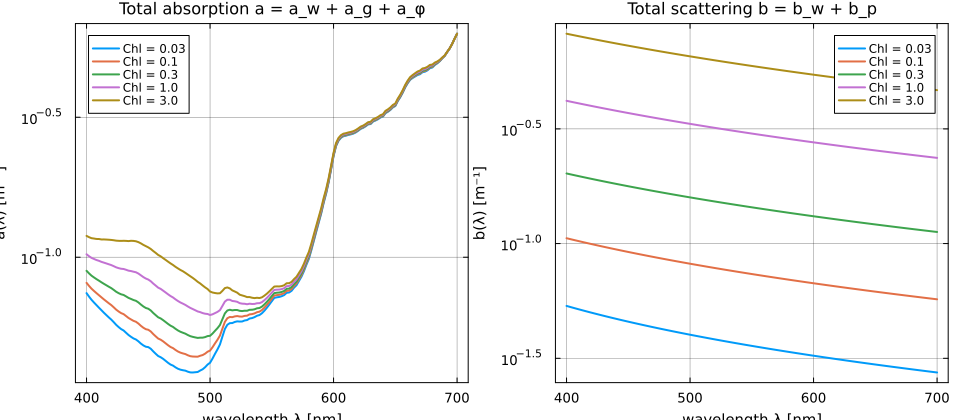
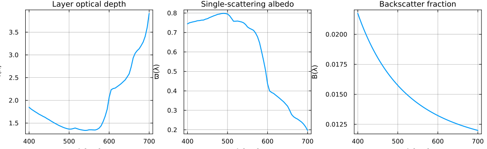
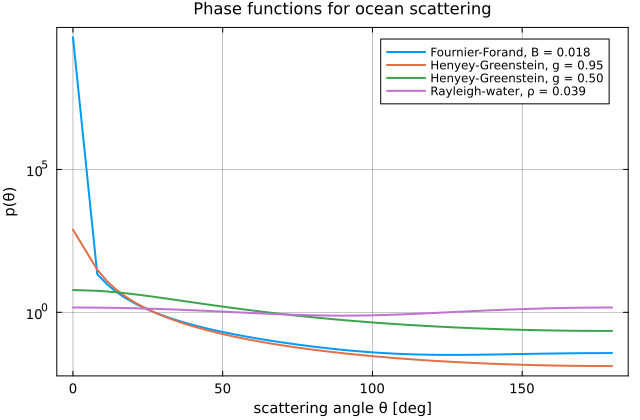
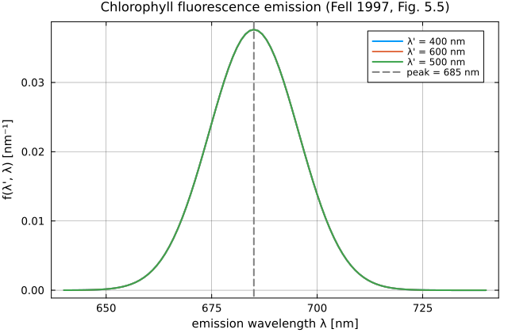

Gallery
Visual sanity checks of OceanOptics.jl outputs against the canonical published figures they should reproduce. All plots below are generated at documentation-build time from the actual package code — hit the source buttons on any figure and you'll see the same @example block that emitted the image.
Each figure cites the published work it is intended to match. If you spot a qualitative disagreement with one of those references, it is a bug.
1. Pure-water absorption, a_w(λ)
Comparison target: Pope & Fry (1997) Fig. 4 and the consolidated pure-water absorption curve on the Ocean Optics Web Book "Absorption by pure water" page. Expect a pronounced minimum around 420 nm (≈ 0.005 m⁻¹), a steep rise into the NIR, and the characteristic water-vapor / O–H combination bands producing shoulders near 605 and 740 nm.
λ = collect(350.0:2.0:800.0)
w_popefry = PureWater{Float64}(absorption_model = PopeFry1997())
w_smithb = PureWater{Float64}(absorption_model = SmithBaker1981())
w_combined = PureWater{Float64}(absorption_model = CombinedPopeFryMason())
a_pf = [absorption(w_popefry, λi) for λi in λ]
a_sb = [absorption(w_smithb, λi) for λi in λ]
a_co = [absorption(w_combined, λi) for λi in λ]
plot(λ, a_pf; label = "Pope & Fry 1997", yscale = :log10,
xlabel = "wavelength λ [nm]", ylabel = "a_w(λ) [m⁻¹]",
title = "Pure-water absorption")
plot!(λ, a_sb; label = "Smith & Baker 1981", linestyle = :dash)
plot!(λ, a_co; label = "Combined (piecewise)", linestyle = :dot)
2. Pure-water scattering — Morel (1974) vs Zhang-Hu (2009)
Comparison target: Zhang, Hu & He (2009) Fig. 3 (seawater at S = 38.4 ‰, T = 20 °C, 350–700 nm). Zhang-Hu sits 1 % below Morel's measurements on average across the visible, per the paper's abstract. Pure-water Morel 1974 overestimates seawater by ~ 30 % because it was calibrated on natural seawater.
λ = collect(350.0:5.0:700.0)
w_morel = PureWater{Float64}(scattering_model = Morel1974())
w_zhh_38 = PureWater{Float64}(scattering_model = ZhangHu2009(),
salinity = 38.4, temperature = 20.0)
w_zhh_00 = PureWater{Float64}(scattering_model = ZhangHu2009(),
salinity = 0.0, temperature = 20.0)
b_mo = [scattering(w_morel, λi) for λi in λ]
b_zh = [scattering(w_zhh_38, λi) for λi in λ]
b_zp = [scattering(w_zhh_00, λi) for λi in λ]
plot(λ, b_mo; label = "Morel 1974", yscale = :log10,
xlabel = "wavelength λ [nm]", ylabel = "b_w(λ) [m⁻¹]",
title = "Pure (sea)water scattering")
plot!(λ, b_zh; label = "Zhang-Hu 2009, S=38.4")
plot!(λ, b_zp; label = "Zhang-Hu 2009, S=0 (pure)", linestyle = :dash)
3. Case-1 water IOPs at varying chlorophyll
Comparison target: Morel & Maritorena (2001) Fig. 8 (total absorption and scattering of Case-1 water versus chlorophyll) and IOCCG Report 5 §2.4. At 440 nm, higher Chl produces both higher total absorption (more a_φ) and higher particulate scattering b_p, with the classical greening of a(λ) away from the pure-water blue minimum.
λ = collect(400.0:2.0:700.0)
Chls = (0.03, 0.1, 0.3, 1.0, 3.0)
water = PureWater{Float64}() # CombinedPopeFryMason + Zhang-Hu
cdom = CDOM{Float64}(a_ref = 0.03)
function total_a(phyto)
return [absorption(water, λi) + absorption(cdom, λi) + absorption(phyto, λi)
for λi in λ]
end
function total_b(phyto)
return [scattering(water, λi) + scattering(phyto, λi) for λi in λ]
end
pa = plot(xlabel = "wavelength λ [nm]", ylabel = "a(λ) [m⁻¹]",
title = "Total absorption a = a_w + a_g + a_φ",
yscale = :log10)
pb = plot(xlabel = "wavelength λ [nm]", ylabel = "b(λ) [m⁻¹]",
title = "Total scattering b = b_w + b_p",
yscale = :log10)
for Chl in Chls
phyto = Phytoplankton{Float64, Bricaud1998}(Chl = Chl)
plot!(pa, λ, total_a(phyto); label = "Chl = $Chl")
plot!(pb, λ, total_b(phyto); label = "Chl = $Chl")
end
plot(pa, pb; layout = (1, 2), size = (960, 420))
4. Layer optics τ, ϖ, B for a 5-m Case-1 layer
Comparison target: typical HydroLight / Mobley "clear ocean" reference output, e.g. Mobley (1994) Table 4.2 and the Ocean Optics Web Book Case-1 water IOP reference pages. At Chl = 0.5 mg/m³ the single-scattering albedo ϖ(λ) should peak near 500 nm (minimum water absorption combined with non-negligible particulate scattering) and fall toward the red as water absorption takes over.
λ = collect(400.0:5.0:700.0)
water = PureWater{Float64}()
cdom = CDOM{Float64}(a_ref = 0.03)
phyto = Phytoplankton{Float64, Bricaud1998}(Chl = 0.5)
layer = OceanLayer(0.0, 5.0,
AbstractOceanConstituent{Float64}[water, cdom, phyto])
opt = layer_optics(layer, λ; ℓ_max = 32)
pτ = plot(opt.λ, opt.τ; label = false,
xlabel = "λ [nm]", ylabel = "τ(λ)",
title = "Layer optical depth")
pϖ = plot(opt.λ, opt.ϖ; label = false,
xlabel = "λ [nm]", ylabel = "ϖ(λ)",
title = "Single-scattering albedo")
pB = plot(opt.λ, opt.B; label = false,
xlabel = "λ [nm]", ylabel = "B(λ)",
title = "Backscatter fraction")
plot(pτ, pϖ, pB; layout = (1, 3), size = (1040, 320))
5. Phase-function comparison — Fournier-Forand vs Henyey-Greenstein vs Rayleigh-water
Comparison target: Mobley, Sundman & Boss (2002) Fig. 1 (Fournier- Forand at several backscatter fractions vs. Petzold) and Hansen & Travis (1974) Fig. 7 for the Rayleigh-with-depolarization shape. Fournier-Forand should be strongly forward-peaked and fall off faster than Henyey-Greenstein at intermediate angles; pure Rayleigh is symmetric forward / back with a p(90°) minimum.
μ = collect(-1.0:0.01:1.0)
pf_ff = FournierForandPhase{Float64}(backscatter_fraction = 0.018)
pf_hg95 = HenyeyGreensteinPhase{Float64}(g = 0.95)
pf_hg50 = HenyeyGreensteinPhase{Float64}(g = 0.50)
pf_ray = RayleighWaterPhase{Float64}(depolarization = 0.039)
ff = [phase_function_value(pf_ff, μi) for μi in μ]
hg95 = [phase_function_value(pf_hg95, μi) for μi in μ]
hg50 = [phase_function_value(pf_hg50, μi) for μi in μ]
ray = [phase_function_value(pf_ray, μi) for μi in μ]
θ_deg = rad2deg.(acos.(μ))
plot(θ_deg, ff; label = "Fournier-Forand, B = 0.018", yscale = :log10,
xlabel = "scattering angle θ [deg]",
ylabel = "p(θ)",
title = "Phase functions for ocean scattering")
plot!(θ_deg, hg95; label = "Henyey-Greenstein, g = 0.95")
plot!(θ_deg, hg50; label = "Henyey-Greenstein, g = 0.50")
plot!(θ_deg, ray; label = "Rayleigh-water, ρ = 0.039")
6. Chlorophyll fluorescence emission spectrum
Comparison target: Fell (1997) Fig. 5.5 and Gordon (1979) — Gaussian emission band centred at 685 nm with σ = 10.6 nm (FWHM ≈ 25 nm). The band is excitation-independent in the 400–700 nm PAR window, so the shape does not shift with λ'.
phyto = Phytoplankton{Float64, Bricaud1998}(Chl = 0.5)
sif = chlorophyll_fluorescence(phyto)
λ_emit = collect(640.0:1.0:740.0)
f_exc = Dict(
"λ' = 400 nm" => [emission(sif, 400.0, λ) for λ in λ_emit],
"λ' = 500 nm" => [emission(sif, 500.0, λ) for λ in λ_emit],
"λ' = 600 nm" => [emission(sif, 600.0, λ) for λ in λ_emit],
)
plot(xlabel = "emission wavelength λ [nm]",
ylabel = "f(λ', λ) [nm⁻¹]",
title = "Chlorophyll fluorescence emission (Fell 1997, Fig. 5.5)")
for (lab, y) in f_exc
plot!(λ_emit, y; label = lab)
end
vline!([685.0]; label = "peak = 685 nm", linestyle = :dash, color = :gray)
7. Water Raman emission vs excitation wavelength
Comparison target: Haltrin & Kattawar (1991) and Bartlett et al. (1998) — a Stokes-shifted Gaussian emission in wavenumber (fixed Δν ≈ 3400 cm⁻¹) that maps onto a variable-width band in wavelength. Excitation at 440 nm produces an emission peak at ≈ 517 nm; at 550 nm the peak is at ≈ 673 nm.
ram = WaterRaman{Float64}()
λ_emit = collect(430.0:1.0:720.0)
λ_excs = (400.0, 440.0, 500.0, 550.0)
plot(xlabel = "emission wavelength λ [nm]",
ylabel = "f_R(λ', λ) [nm⁻¹]",
title = "Water Raman emission — Stokes shift = 3400 cm⁻¹")
for λ′ in λ_excs
f = [emission(ram, λ′, λ) for λ in λ_emit]
λp = raman_peak_wavelength(ram, λ′)
plot!(λ_emit, f; label = "λ' = $(Int(round(λ′))) nm (peak $(round(λp; digits=0)) nm)")
end